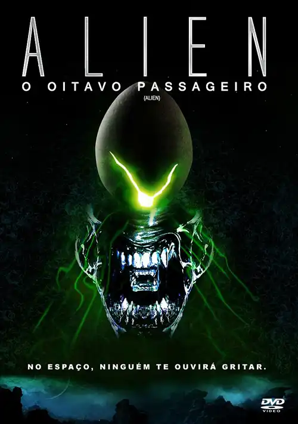

Alien, o 8º Passageiro (1979)

Sinopse: A tripulação da nave Nostromo é despertada de seu sono criogênico por um sinal misterioso de um planeta próximo. Ao investigar, um de seus membros é atacado por uma criatura alienígena. Mal sabem eles que o verdadeiro horror está apenas começando a se manifestar dentro da nave, transformando a missão de resgate em uma luta desesperada pela sobrevivência.
Diretor: Ridley Scott
Elenco Principal: Sigourney Weaver (Ellen Ripley), Tom Skerritt (Dallas), Veronica Cartwright (Lambert), Harry Dean Stanton (Brett), John Hurt (Kane), Ian Holm (Ash).
Bilheteria Mundial: Aproximadamente US$104.9 milhões
Curiosidades:
- O design da criatura Alien, o Xenomorfo, foi criado pelo artista H.R. Giger.
- É considerado um marco do terror de ficção científica e um pioneiro no subgênero "survival horror" no cinema.
- A cena do "chestburster" (quando o Alien explode do peito de um tripulante) é uma das mais chocantes e icônicas da história do cinema.
- Lançou Sigourney Weaver ao estrelato como uma das primeiras grandes heroínas de ação do cinema.